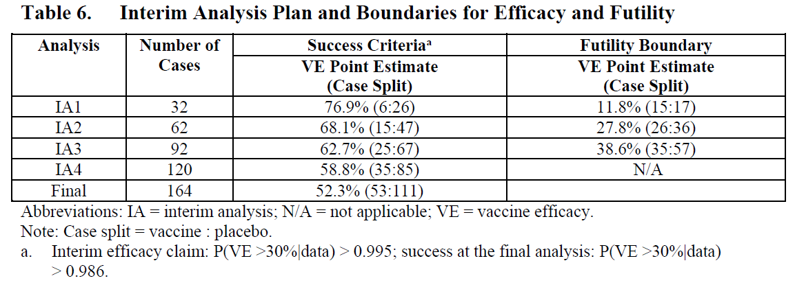
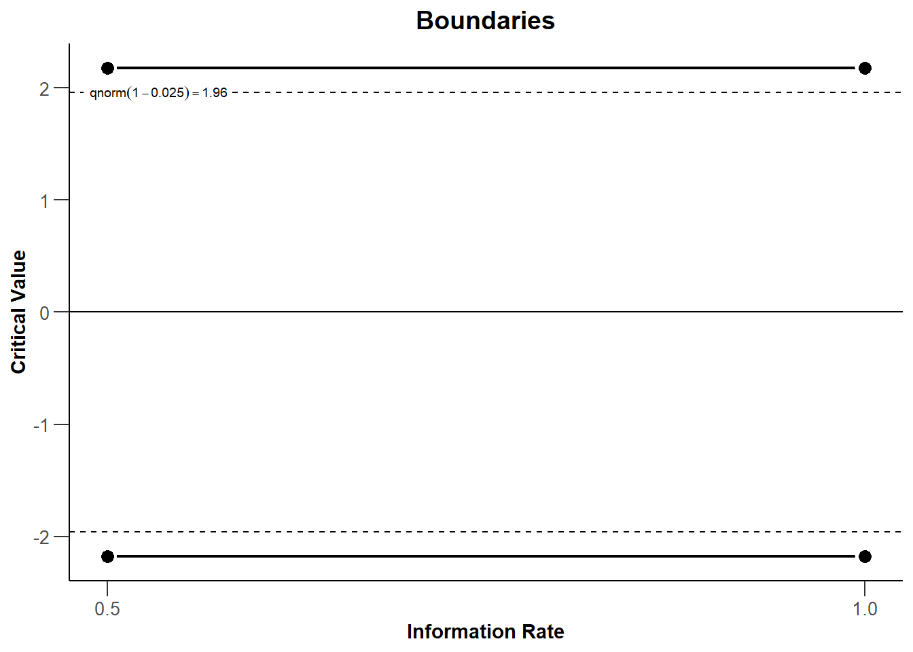
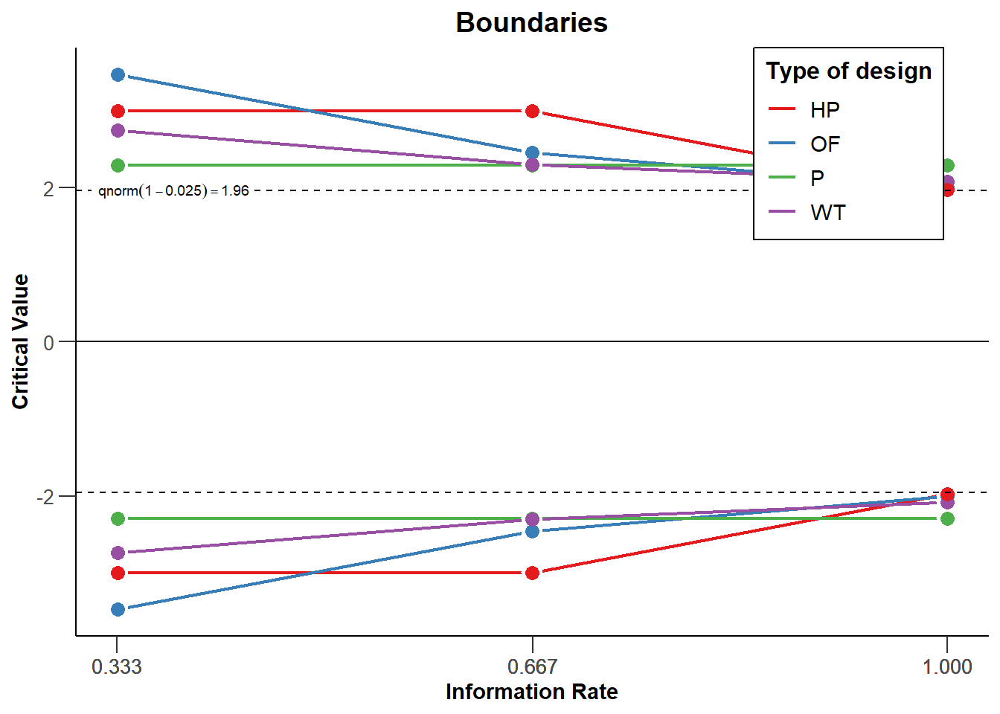
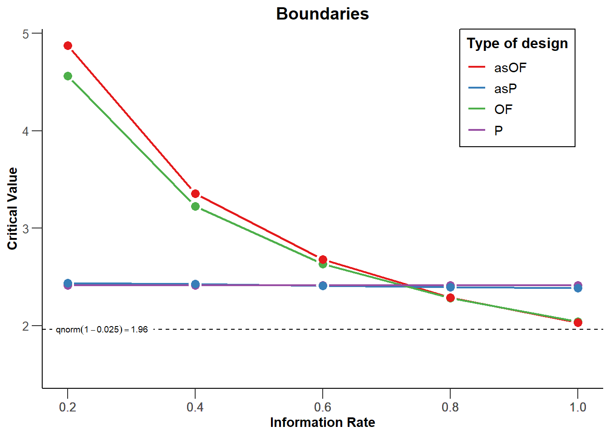
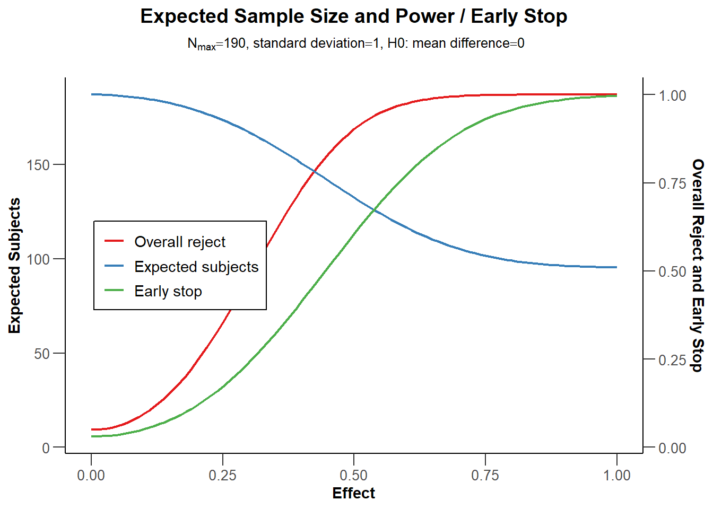
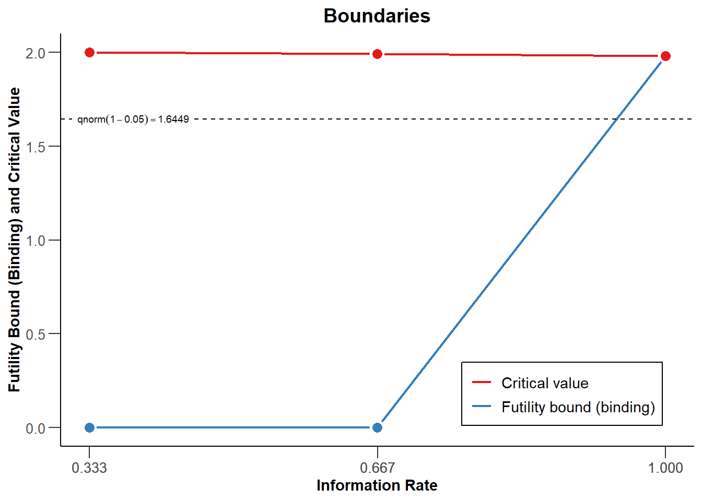
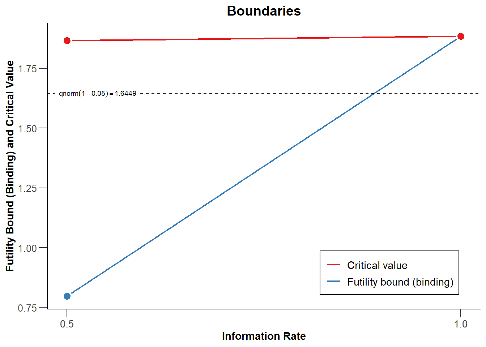
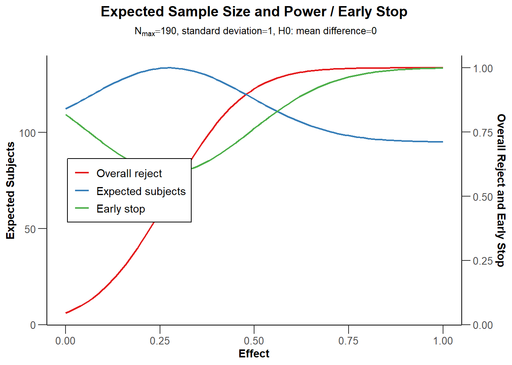
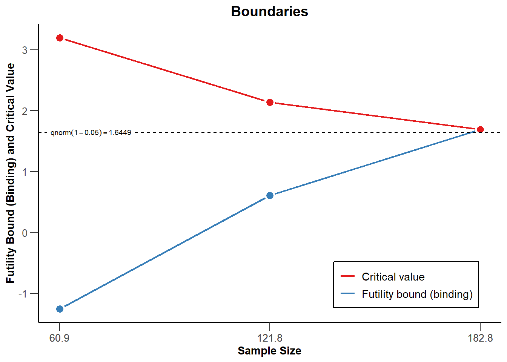

10 Sequential Analysis
Repeatedly analyzing incoming data while data collection is in progress has many advantages. Researchers can stop the data collection at an interim analysis when they can reject the null hypothesis or the smallest effect size of interest, even if they would be willing to collect more data if needed, or if the results show there is an unexpected problem with the study (e.g., participants misunderstand the instructions or questions). One could easily argue that psychological researchers have an ethical obligation to repeatedly analyze accumulating data, given that continuing data collection whenever the desired level of confidence is reached, or whenever it is sufficiently clear that the expected effects are not present, is a waste of the time of participants and the money provided by taxpayers. In addition to this ethical argument, designing studies that make use of sequential analyses can be more efficient than when data is only analyzed a single time, when the maximum sample size a researcher is willing to collect has been reached.
Sequential analyses should not be confused with optional stopping, which was discussed in the chapter on error control. In optional stopping, researchers use an unadjusted alpha level (e.g., 5%) to repeatedly analyze the data as it comes in, which can substantially inflate the Type 1 error rate. The critical difference with sequential analysis is that the Type 1 error rate is controlled. By lowering the alpha level at each interim analysis, the overall Type I error rate can be controlled, much like a Bonferroni correction is used to prevent inflation of the Type 1 error rate for multiple comparisons. Indeed, the Bonferroni correction is a valid (but conservative) approach to control the error rate in sequential analyses (Wassmer & Brannath, 2016).
In sequential analysis a researcher designs a study such that they are able to perform interim analyses, say when 25%, 50%, and 75% of the data is collected. At each interim analysis a test is performed at a corrected alpha level, so that over all planned analyses the desired Type 1 error rate is maintained. Sequential analyses are commonly used in medical trials, where quickly discovering an effective treatment can be a matter of life and death. If at an interim analysis, researchers decide that a new drug is effective, in turn they may well want to terminate the trial and give the working drug to patients in the control condition to improve their health, or even save their lives. For example, the safety and efficacy of the Pfizer–BioNTech COVID-19 vaccine used an experimental design where they planned to analyze the data 5 times, and controlled the overall Type 1 error rate by lowering the alpha level for each interim analysis.
The use of sequential analyses is only slowly becoming more popular in many scientific disciplines, but sequential analysis techniques have a long history. As early as 1929, Dodge and Romig realized that analyzing the data sequentially was more efficient than doing so once (Dodge & Romig, 1929). Wald (1945), who popularized the idea of sequential tests of hypotheses in 1945, performed his work during the second world war. He was only allowed to publish his findings after the war had ended, as he explains in a historical note:
Because of the substantial savings in the expected number of observations effected by the sequential probability ratio test, and because of the simplicity of this test procedure in practical applications, the National Defense Research Committee considered these developments sufficiently useful for the war effort to make it desirable to keep the results out of the reach of the enemy, at least for a certain period of time. The author was, therefore, requested to submit his findings in a restricted report which was dated September, 1943.
Sequential analyses are well-established procedures, and have been developed in great detail over the last decades (Jennison & Turnbull, 2000; Proschan et al., 2006; Wassmer & Brannath, 2016). Here, we will explain the basics of how to control error rates in group sequential analyses, perform a-priori power analysis and compare when sequential designs will be more or less efficient than fixed designs. Before we discuss these topics, it is useful to clarify some terminology. A look (also called stage) means analyzing all the data collected up to a specific point; that is, you look after 50, 100, and 150 observations, and analyze all the data that has been collected up to that point. After 50 and 100 observations we perform an interim analysis, and after 150 observations we perform the final analysis, after which we always stop. Not all looks have to occur in practice. If the analysis reveals a statistically significant result at look 1, data collection can be terminated. We can stop because we reject \(H_0\) (e.g., in a null hypothesis significance test), or because we reject \(H_1\) (e.g., in an equivalence test). We can also stop for curtailment or for futility: It is either impossible, or very unlikely for the final analysis to yield p < alpha. The overall alpha level in a sequential design differs from the alpha level at each look. For example, if we want an overall Type I error rate of 5% for a two-sided test with 3 looks, the alpha level for each look could be 0.0221 (if we decide to use the correction for the alpha level proposed by Pocock (1977)). In this chapter we will focus on group sequential designs, where data is collected in multiple groups, but other sequential approaches exist, as explained in the chapter on sample size justification.
10.1 Choosing alpha levels for sequential analyses.
If one would analyze the data at multiple looks without correcting the alpha level, the Type 1 error rate would inflate (Armitage et al., 1969). As Armitage and colleagues show, with equally spaced looks, the alpha level inflates to 0.142 after 5 looks, 0.374 after 100 looks, and 0.530 after 1000 looks. Looking at the data twice is conceptually similar to deciding if a result is significant if one of two dependent variables shows a statistically significant effect. However, an important difference is that in the case of sequential analyses the multiple tests are not independent, but dependent. A test at look 2 combines the old data collected at look 1 with the new data at look 2. This means the Type 1 error rate inflates less quickly compared to independent tests, and we will see below this enables more efficient and flexible solutions to controlling error rates.
When controlling the Type 1 error rate in sequential analyses, a decision needs to be made about how to spend the alpha level across all looks at the data. For example, when a researcher plans a study with one interim look and one final look at the data, boundary critical Z-values need to be set for the first look (at n out of N observations) and the second look (at N observations). These two critical values, \(c_1\) and \(c_2\) (for the first and the second analysis) need to be chosen such that the overall probability (Pr) that the null hypothesis is rejected – when in the first analysis the observed Z-score is larger than the critical value for the first look, \(Z_n\) ≥ \(c_1\), and (if we did not reject the hypothesis in the first analysis, so \(Z_n\) < \(c_1\), and we continue data collection) when in the second analysis the observed Z-score is larger than the critical value for the second look, \(Z_N\) ≥ \(c_2\) – equals the desired overall alpha level when the null hypothesis is true. In formal terms, for a directional test:
\[ Pr\{Z_n \geq c_1\} + Pr\{Z_n < c_1, Z_N \geq c_2\} = \alpha \]
With more than one interim analysis, additional critical values have to be determined following the same rationale. If you combine multiple looks at the data with multiple comparisons, you would correct the alpha level twice, once for multiple comparisons, and then for multiple looks. Because the alpha level is corrected, it does not matter which statistical test you perform at each look, all that matters is that the p-value is compared to the corrected alpha level. The corrections discussed below are valid for any design where the data is normally distributed, and where each group of observations is independent of the previous group.
10.2 The Pocock correction
The first decision researchers need to make is how they want to correct the Type I error rate across looks. Four common approaches are the Pocock correction, the O’Brien-Fleming correction, the Haybittle & Peto correction, and the Wang and Tsiatis approach. Users are also free to specify their own preferred way to spend the alpha level across looks.
The Pocock correction is the simplest way to correct the alpha level for multiple looks. Conceptually, it is very similar to the Bonferroni correction. The Pocock correction has been created such that the alpha level is identical for each look at the data, resulting in constant critical values (expressed as z values) \(u_k = c\) to reject the null hypothesis, \(H_0\), at look \(k\). The following code uses the package rpact to design a study for a sequential analysis:
library(rpact)
design <- getDesignGroupSequential(
kMax = 2,
typeOfDesign = "P",
sided = 2,
alpha = 0.05,
beta = 0.1
)
designDesign parameters and output of group sequential design:
User defined parameters:
Type of design : Pocock
Maximum number of stages : 2
Stages : 1, 2
Significance level : 0.0500
Type II error rate : 0.1000
Test : two-sided
Derived from user defined parameters:
Information rates : 0.500, 1.000
Default parameters:
Two-sided power : FALSE
Tolerance : 0.00000001
Output:
Cumulative alpha spending : 0.02939, 0.05000
Critical values : 2.178, 2.178
Stage levels (one-sided) : 0.01469, 0.01469 The output tells us we have designed a study with 2 looks (one interim, one final) using the Pocock spending function. The last line returns one-sided alpha levels. The rpact package focuses on Confirmatory Adaptive Clinical Trial Design and Analysis. In clinical trials, researchers mostly test directional predictions, and thus, the default setting is to perform a one-sided test. In clinical trials it is common to use a 0.025 significance level for one-sided tests, but in many other fields, 0.05 is a more common default. We can get the two-sided alpha levels by multiplying the one-sided alpha levels by two:
We can check the output against the Wikipedia page for the Pocock correction where we indeed see that with 2 looks at the data the alpha level for each look is 0.0294. The Pocock correction is slightly more efficient than using a Bonferroni correction (in which case the alpha levels would be 0.025), because of the dependency in the data (at the second look, the data analyzed at the first look is again part of the analysis).
rpact makes it easy to plot the boundaries (based on the critical values) for each look. Looks are plotted as a function of the ‘Information Rate’, which is the percentage of the total data that has been collected at a look. In Figure 10.1 there are two equally spaced looks, so when 50% of the data has been collected (Information Rate 0.5) and when 100% of the data has been collected (Information Rate 1). We see the critical values (solid black lines) are larger than the 1.96 we would use for a fixed design with a 5% alpha level, namely Z = 2.178 (black dashed line). Whenever we observe a test statistic that is more extreme than these critical values at the first or second look, we can reject the null hypothesis.

The analysis can also be performed in the rpact shiny app which also allows users to create all plots through simple menu options, and download a complete report of the analyses (e.g., for a preregistration document).

10.3 Comparing Spending Functions
We can visualize the corrections for different types of designs for each of 3 looks (2 interim looks and one final look) in the same plot (see Figure 10.3). The plot below shows the Pocock, O’Brien-Fleming, Haybittle-Peto, and Wang-Tsiatis correction with \(\Delta\) = 0.25. We see that researchers can choose different approaches to spend their alpha level across looks. Researchers can choose to spend their alpha conservatively (keeping most of the alpha for the last look), or more liberally (spending more alpha at the earlier looks, which increases the probability of stopping early for many true effect sizes).

We can see that the O’Brien and Fleming correction is much more conservative at the first look but is close to the uncorrected critical value of 1.96 at the last look (the black dashed line - for two-sided tests all critical values are mirrored in the negative direction): 3.471, 2.454, and 2.004. The Pocock correction has the same critical value at each look (2.289, 2.289, and 2.289). The Haybittle and Peto correction has the same critical value at each look but the last (3, 3, and 1.975). With the Wang and Tsiatis correction, critical values decrease with each look (2.741, 2.305, and 2.083).
Being conservative during early looks is sensible if you mainly want to monitor the results for unexpected developments. A Pocock correction is more useful when there is substantial uncertainty both in whether an effect is present and how large the effect size is, as it gives a higher probability of stopping the experiment early if the effects are large. Because the statistical power of a test depends on the alpha level, lowering the alpha level at the final look means that the statistical power is lower compared to a fixed design, and that to achieve a desired power, the sample size of a study needs to be increased to maintain the same statistical power at the last look. This increase in sample size can be compensated by stopping data collection early, in which case a sequential design is more efficient than a fixed design. Because the alpha at the last look for O’Brien-Fleming or Haybittle-Peto designs are very similar to the statistical power for a fixed design with only one look, the required sample size is also very similar. The Pocock correction requires a larger increase in the maximum sample size to achieve the desired power compared to a fixed design.
Corrected alpha levels can be computed to many digits, but this quickly reaches a level of precision that is meaningless in real life. The observed Type I error rate for all tests you will do in your lifetime is not noticeably different if you set the alpha level at 0.0194, 0.019, or 0.02 (see the concept of ‘significant digits’. Even as we calculate and use alpha thresholds up to many digits in sequential tests, the messiness of most research makes these alpha levels have false precision. Keep this in mind when interpreting your data.
10.4 Alpha spending functions
The approaches to specify the shape of decision boundaries across looks discussed so far have an important limitation (Proschan et al., 2006). They require a pre-specified number of looks (e.g., 4), and the sample size for the interim looks need to be pre-specified as well (e.g., after 25%, 50%, 75%, and 100% of observations). It is logistically not always feasible to stop the data collection exactly at 25% of the planned total sample size. An important contribution to the sequential testing literature was made by Lan and DeMets (1983) who introduced the alpha spending approach to correct the alpha level. In this approach the cumulative Type I error rate spent across the looks is pre-specified through a function (the alpha spending function) to control the overall significance level \(\alpha\) at the end of the study.
The main benefit of these alpha spending functions is that error rates at interim analyses can be controlled, while neither the number nor the timing of the looks needs to be specified in advance. This makes alpha spending approaches much more flexible than earlier approaches to controlling the Type 1 error in group sequential designs. When using an alpha spending function it is important that the decision to perform an interim analysis is not based on collected data, as this can still increase the Type I error rate. As long as this assumption is met, it is possible to update the alpha levels at each look during a study.

10.5 Updating boundaries during a study
Although alpha spending functions control the Type I error rate even when there are deviations from the pre-planned number of looks, or their timing, this does require recalculating the boundaries used in the statistical test based on the amount of information that has been observed. Let us assume a researcher designs a study with three equally spaced looks at the data (two interim looks, one final look), using a Pocock-type alpha spending function, where results will be analyzed in a two-sided t-test with an overall desired Type I error rate of 0.05, and a desired power of 0.9 for a Cohen’s d of 0.5. An a-priori power analysis (which we will explain in the next section) shows that we achieve the desired power in our sequential design if we plan to look after 65.4, 130.9, and 196.3 observations in each condition. Since we cannot collect partial participants, we should round these numbers up, and because we have 2 independent groups, we will collect 66 observations for look 1 (33 in each condition), 132 at the second look (66 in each condition) and 198 at the third look (99 in each condition). The code below computes the alpha levels at each look (or stage) for a two-sided test:
design <- getDesignGroupSequential(kMax = 3,
typeOfDesign = "asP",
sided = 2,
alpha = 0.05,
beta = 0.1)
design$stageLevels * 2[1] 0.02264162 0.02173822 0.02167941Now imagine that due to logistical issues, we do not manage to analyze the data until we have collected data from 76 observations (38 in each condition) instead of the planned 66 observations. Such logistical issues are common in practice and one of the main reasons alpha spending functions for group sequential designs were developed. Our first look at the data does not occur at the planned time of collecting 33.3% of the total sample, but at 76/198 = 38.4% of the planned sample. We can recalculate the alpha level we should use for each look at the data, based on the current look, and planned future looks. Instead of using the alpha levels 0.0226, 0.0217, and 0.0217 at the three respective looks (as calculated above, and note how in the Pocock-like alpha spending function the alpha levels are almost, but not exactly, the same at each look, unlike the Pocock correction where they are identical at each look). We can adjust the information rates by explicitly specifying them using informationRates in the code below. The first look now occurs at 76/198 of the planned sample. The second look is still planned to occur at 2/3 of the sample, and the final look at the planned maximum sample size.
design <- getDesignGroupSequential(
typeOfDesign = "asP",
informationRates = c(76/198, 2/3, 1),
alpha = 0.05,
sided = 2)
design$stageLevels * 2[1] 0.02532710 0.02043978 0.02164755The updated alpha levels are 0.0253 for the current look, 0.0204 for the second look, and 0.0216 for the final look. The alpha level we will use for the first look is therefore not 0.0226 (as originally planned) but the slightly higher 0.0253. The second look will now use a slightly lower alpha of 0.0204 instead of 0.0217. The differences are small, but the fact that there is a formal method to control the alpha level that provides the flexibility to look at different times than originally planned is extremely useful.
It is also possible to correct the alpha level if the final look at the data changes, for example because you are not able to collect the intended sample size, or because due to unforeseen circumstances you collect more data than planned. This is nowadays increasingly common as people preregister their studies, or publish using Registered Reports. Sometimes they end up with slightly more data than planned, which raises the question is they should analyze the planned sample size, or all the data. Analyzing all the collected data prevents wasting responses from participants, and uses all the information available, but it increases the flexibility in the data analysis (as researchers can now choose to analyze either the data from the planned sample, or all the data they have collected). Alpha spending functions solve this conundrum by allowing researchers to analyze all the data, while updating the alpha level that is used to control the overall alpha level.
If more data is collected than was planned, we can no longer use the alpha spending function that was chosen (i.e., the Pocock spending function), and instead have to provide a user-defined alpha spending function by updating the timing and alpha spending function to reflect the data collection as it actually occurred up to the final look. Assuming the second look in our earlier example occurred as originally planned at 2/3 of the data we planned to collect, but the last look occurred at 206 participants instead of 198, we can compute an updated alpha level for the last look. Given the current total sample size, we need to recompute the alpha levels for the earlier looks, which now occurred at 76/206 = 0.369, 132/206 = 0.641, and for the last look at 206/206 = 1.
The first and second look occurred with the adjusted alpha levels we computed after the first adjustment (alpha levels of 0.0253 and 0.0204). We have already spent part of our total alpha at the first two looks. We can look at the “Cumulative alpha spent’ in the results from the design we specified above, and see how much of our Type I error rate we spent so far:
We see that we have spent 0.0253 after look 1, and 0.0382 after look 2. We also know we want to spend the remainder of our Type I error rate at the last look, for a total of 0.05.
Our actual alpha spending function is no longer captured by the Pocock spending function after collecting more data than planned, so instead we specify a user defined spending function. We can perform these calculations using the code below by specifying the userAlphaSpending information, after choosing the asUser design:
design <- getDesignGroupSequential(
typeOfDesign = "asUser",
informationRates = c(72/206, 132/206, 1),
alpha = 0.05,
sided = 2,
userAlphaSpending = c(0.0253, 0.0382, 0.05)
)
design$stageLevels * 2[1] 0.02530000 0.01987072 0.02075796The alpha levels for looks in the past do not correspond with the alpha levels we used, but the final alpha level (0.0208) gives the alpha level we should use for our final analysis based on a sample size that is larger than what we planned to collect. The difference with the alpha level we would have used if we collected the planned sample size is really small (0.0216 vs. 0.0208), in part because we did not miss the planned sample size by a lot. Such small differences in alpha levels will not really be noticeable in practice, but it is very useful that there is a formally correct solution to deal with collecting more data than planned, while controlling the Type 1 error rate. If you use sequential designs, you can use these corrections whenever you overshoot the sample size you planned to collect in a preregistration.
10.6 Sample Size for Sequential Designs
At the final look, sequential designs require somewhat more participants than a fixed design, depending on how much the alpha level at this look is lowered due to the correction for multiple comparisons. That said, due to early stopping, sequential designs will on average require less participants. Let’s first examine how many participants we would need in a fixed design, where we only analyze our data once. We have an alpha level of 0.05, and a Type 2 (beta) error of 0.1 - in other words, the desired power is 90%. We will perform one test, and assuming a normal distribution our critical Z-score would be 1.96, for an alpha level of 5%.
design <- getDesignGroupSequential(
kMax = 1,
typeOfDesign = "P",
sided = 2,
alpha = 0.05,
beta = 0.1
)
power_res <- getSampleSizeMeans(
design = design,
groups = 2,
alternative = 0.5,
stDev = 1,
allocationRatioPlanned = 1,
normalApproximation = FALSE)
power_resDesign plan parameters and output for means:
Design parameters:
Critical values : 1.96
Two-sided power : FALSE
Significance level : 0.0500
Type II error rate : 0.1000
Test : two-sided
User defined parameters:
Alternatives : 0.5
Default parameters:
Mean ratio : FALSE
Theta H0 : 0
Normal approximation : FALSE
Standard deviation : 1
Treatment groups : 2
Planned allocation ratio : 1
Sample size and output:
Number of subjects fixed : 170.1
Number of subjects fixed (1) : 85
Number of subjects fixed (2) : 85
Lower critical values (treatment effect scale) : -0.303
Upper critical values (treatment effect scale) : 0.303
Local two-sided significance levels : 0.0500
Legend:
(i): values of treatment arm iWe see that we need 85 participants in each group, (or 86, since the sample size is actually 85.03 and the required number of observations is rounded up, and so we need 172 participants in total. Other power analysis software, such as G*Power, should yield the same required sample size. We can now examine our design above with 2 looks and a Pocock-like alpha spending function for a 2 sided test with an alpha of 0.05. We will look 2 times, and expect a true effect of d = 0.5 (which we enter by specifying an alternative of 0.5, and a stDev of 1).
seq_design <- getDesignGroupSequential(
kMax = 2,
typeOfDesign = "asP",
sided = 2,
alpha = 0.05,
beta = 0.1
)
# Compute the sample size we need
power_res_seq <- getSampleSizeMeans(
design = seq_design,
groups = 2,
alternative = 0.5,
stDev = 1,
allocationRatioPlanned = 1,
normalApproximation = FALSE)
power_res_seqDesign plan parameters and output for means:
Design parameters:
Information rates : 0.500, 1.000
Critical values : 2.157, 2.201
Futility bounds (non-binding) : -Inf
Cumulative alpha spending : 0.03101, 0.05000
Local one-sided significance levels : 0.01550, 0.01387
Two-sided power : FALSE
Significance level : 0.0500
Type II error rate : 0.1000
Test : two-sided
User defined parameters:
Alternatives : 0.5
Default parameters:
Mean ratio : FALSE
Theta H0 : 0
Normal approximation : FALSE
Standard deviation : 1
Treatment groups : 2
Planned allocation ratio : 1
Sample size and output:
Reject per stage [1] : 0.6022
Reject per stage [2] : 0.2978
Early stop : 0.6022
Maximum number of subjects : 188.9
Maximum number of subjects (1) : 94.5
Maximum number of subjects (2) : 94.5
Number of subjects [1] : 94.5
Number of subjects [2] : 188.9
Expected number of subjects under H0 : 186
Expected number of subjects under H0/H1 : 172.7
Expected number of subjects under H1 : 132.1
Lower critical values (treatment effect scale) [1] : -0.451
Lower critical values (treatment effect scale) [2] : -0.323
Upper critical values (treatment effect scale) [1] : 0.451
Upper critical values (treatment effect scale) [2] : 0.323
Local two-sided significance levels [1] : 0.03101
Local two-sided significance levels [2] : 0.02774
Legend:
(i): values of treatment arm i
[k]: values at stage kThe sample size per condition at the first look is 47.24, and at the second look it is 94.47, which means we are now collecting 190 instead of 172 participants. This is a consequence of lowering our alpha level at each look (from 0.05 to 0.028). To compensate for the lower alpha level, we need to increase the sample size of the study to achieve the same power.
However, the maximum sample size is not the expected sample size for this design, because of the possibility that we can stop data collection at an earlier look in the sequential design. In the long run, if d = 0.5, and we use an Pocock-like alpha spending function, and ignoring upward rounding because we can only collect a complete number of observations, we will sometimes collect 96 participants and stop after the first look, and the remaining time continue to 190 participants. As we see in the rows ‘Reject per stage’ the data collection is expected to stop after the first look in 0.6 of the studies because we have observed a significant result. The remainder of the time (1 - 0.6) = 0.4.
This means that, assuming there is a true effect of d = 0.5, the expected sample size on average is the probability of stopping at each look, multiplied by the number of observations we collect at each look, so 0.6 * 96 + 0.3 * 190 = 133.39. The rpact package returns 132.06 under “Expected number of subjects under \(H_1\)” - the small difference is due to the fact that rpact does not round the number of observations up, although it should). So, assuming the true effect is d = 0.5, in any single study we might need to collect slightly more data than in a fixed design (where we would collect 172), but on average we will need to collect less observations in a sequential design.
Because power is a curve, and the true effect size is unknown, it is useful to plot power across a range of possible effect sizes, so that we can explore the expected sample size, in the long run, if we use a sequential design, for different true effect sizes.
# Use getPowerMeans and set max N to 190 based on analysis above
sample_res <- getPowerMeans(
design = seq_design,
groups = 2,
alternative = seq(0, 1, 0.01),
stDev = 1,
allocationRatioPlanned = 1,
maxNumberOfSubjects = 190,
normalApproximation = FALSE)
plot(sample_res, type = 6)
The blue line in Figure 10.5 indicates the expected number of observations we need to collect. Not surprisingly, when the true effect size is 0, we will almost always continue data collection to the end. We will only stop if we observe a Type 1 error, which is rare, and thus the expected number of observations is very close to the maximum sample size we are willing to collect. On the other side of the graph we see the scenario for when the true effect size is d = 1. With such a large effect size, we will have high power at our first look, and we will almost always be able to stop at the first look. The red line indicates the power at the final look, and the green line indicates the probability of stopping early.
The Pocock correction leads to a substantially lower alpha level at the last look, which requires an increase in sample size to compensate. As we saw before, the O’Brien-Fleming spending function does not require such a severe reduction in the alpha level at the last look. As the power analysis below shows, with 2 looks, this design would not need an increase in sample size at all in practice.
seq_design <- getDesignGroupSequential(
kMax = 2,
typeOfDesign = "asOF",
sided = 2,
alpha = 0.05,
beta = 0.1
)
# Compute the sample size we need
power_res_seq <- getSampleSizeMeans(
design = seq_design,
groups = 2,
alternative = 0.5,
stDev = 1,
allocationRatioPlanned = 1,
normalApproximation = FALSE)
summary(power_res_seq)Sample size calculation for a continuous endpoint
Sequential analysis with a maximum of 2 looks (group sequential design), overall
significance level 5% (two-sided).
The sample size was calculated for a two-sample t-test, H0: mu(1) - mu(2) = 0,
H1: effect = 0.5, standard deviation = 1, power 90%.
Stage 1 2
Information rate 50% 100%
Efficacy boundary (z-value scale) 2.963 1.969
Overall power 0.2525 0.9000
Expected number of subjects 149.1
Number of subjects 85.3 170.6
Cumulative alpha spent 0.0031 0.0500
Two-sided local significance level 0.0031 0.0490
Lower efficacy boundary (t) -0.661 -0.304
Upper efficacy boundary (t) 0.661 0.304
Exit probability for efficacy (under H0) 0.0031
Exit probability for efficacy (under H1) 0.2525
Legend:
(t): treatment effect scaleThis design meets the desired power when we collect 172 participants - exactly as many as when we would not look at the data once. We basically get a free look at the data, with the expected number of participants (assuming d = 0.5) dropping to 149.1. Increasing the number of looks to 4 comes at only a very small required increase in the number of participants to maintain the same statistical power, but further decreases the expected sample size. Especially for a conservative a-priori power analysis, or when performing an a-priori power analysis for a smallest effect size of interest, and there is a decent probability that the true effect size is larger, using sequential analysis is a very attractive option.
10.7 Stopping for futility
So far, the sequential designs we have discussed would only stop at an interim analysis if we can reject \(H_0\). A well-designed study also takes into account the possibility that there is no effect, as we discussed in the chapter on equivalence testing. In the sequential analysis literature, stopping to reject the presence of the smallest effect size of interest is called stopping for futility. In the most extreme case, it could be impossible after an interim analysis that the final analysis will yield a statistically significant result. To illustrate this in a hypothetical scenario, imagine that after collecting 182 out of 192 observations, the observed mean difference between two independent conditions is 0.1, while the study was designed with the idea that the smallest effect deemed worthwhile is a mean difference of 0.5. If the primary dependent variable is measured on a 7 point Likert scale, it might be that even if every of the remaining 5 participants in the control condition answers 1, and every of the remaining participants in the experimental condition answers 7, the effect size after 192 observations will not yield p < \(\alpha\). If the goal of your study was to detect whether there was an effect of at least a mean difference of 0.5, at this point a researcher knows that goal will not be reached. Stopping a study at an interim analysis because the final result cannot yield a significant effect is called non-stochastic curtailment.
In less extreme but more common situations, it might still be possible for the study to observe a significant effect, but the probability might be very small. The probability of finding a significant result, given the data that have been observed up to an interim analysis, is called conditional power. Performing the conditional power analysis on the effect size that was originally expected might be too optimistic, but it is also undesirable to use the observed effect size, which typically has quite some uncertainty. One proposal is to update the expected effect size based on the observed data. If a Bayesian updating procedure is used, this is called predictive power (Spiegelhalter et al., 1986). It is possible to use adaptive designs that allow researchers to increase the final number of observations based on an interim analysis without inflating the Type 1 error rate (see Wassmer & Brannath (2016)).
Alternatively, if the observed effect size is smaller than expected, one might want to stop for futility. As an illustration of a simple stopping rule for futility, imagine a researcher who will stop for futility whenever the observed effect size is is either zero, or in the opposite direction as was predicted. In Figure 10.6 the red line indicates critical values to declare a significant effect. In essence, this means that if the observed z-score for the interim test is either 0 or negative, data collection will be terminated. This can be specified by adding futilityBounds = c(0, 0) to the specification of the sequential design. One can choose in advance to stop whenever the criteria to stop for futility have been met, (i.e., a binding futility rule), but it is typically recommended to allow the possibility to continue data collection (i.e., a non-binding futility rule, specified by setting bindingFutility = FALSE).
In Figure 10.6 we see a sequential design where data collection is stopped to reject \(H_0\) when the observed z-score is larger than the values indicated by the red line, computed based on a Pocock-like alpha spending function (as in Figure 10.3). In addition, data collection will stop when at an interim analysis a z-score lower than or equal to 0 is observed, as indicated by the blue line. At the last look, the red and blue lines meet, because we will either reject \(H_0\) at the critical value, or fail to reject \(H_0\).

Manually specifying the futility bounds is not ideal, as we risk stopping data collection because we fail to reject \(H_0\), when there is a high probability of a Type 2 error. It is better to set the futility bounds by directly controlling the Type 2 error across looks at the data. Just as we are willing to distribute our Type I error rate across interim analyses, we can distribute our Type II error rate across looks, and decide to stop for futility when we fail to reject the effect size of interest with a desired Type 2 error rate.
When a study is designed such that the null hypothesis significance test has 90% power to detect an effect of d = 0.5, 10% of the time \(H_0\) will not be rejected when it should. In these 10% of cases where we make a Type 2 error, the conclusion will be that an effect of 0.5 is not present, when in reality, there is an effect of d = 0.5 (or larger). In an equivalence against a smallest effect size of interest of d = 0.5, the conclusion that an effect of 0.5 or larger is not present, when in reality there is an effect of d = 0.5 (or larger), is called a Type 1 error: We incorrectly conclude the effect is practically equivalent to zero. Therefore, what is a Type 2 error in NHST when \(H_0\) is d = 0 and \(H_1\) = d = 0.5 is a Type 1 error in an equivalence test where \(H_0\) is d = 0.5 and \(H_1\) is d = 0 (Jennison & Turnbull, 2000). Controlling the Type 2 error in a sequential design can therefore be seen as controlling the Type 1 error for an equivalence test against the effect size the study is powered for. If we design a study to have a 5% Type 1 error rate and equally low Type 2 error rate (e.g., 5%, or 95% power), the study is an informative test for the presence or the absence of an effect of interest.
If the true effect size is (close to) 0, sequential designs that stop for futility are more efficient than designs that do not stop for futility. Adding futility bounds based on beta-spending functions reduces power, which needs to be compensated by increasing the sample size, but this can be compensated by the fact that studies can stop earlier for futility, which can make designs more efficient. When specifying a smallest effect size of interest is not possible, researchers might not want to incorporate stopping for futility into the study design. To control the Type 2 error rate across looks, a beta-spending function needs to be chosen, such as a Pocock type beta spending function, an O’Brien-Fleming type beta spending function, or a user defined beta spending function. For example, a Pocock-like beta-spending function is added through typeBetaSpending = “bsP”. The beta-spending function does not need to be the same as the alpha-spending function. In rpact beta-spending functions can only be chosen for directional (one-sided) tests. After all, you can consider an effect in both directions support for your hypothesis, and an effect in the opposite direction as a reason to reject the alternative hypothesis.
design <- getDesignGroupSequential(
kMax = 2,
typeOfDesign = "asP",
sided = 1,
alpha = 0.05,
beta = 0.1,
typeBetaSpending = "bsP",
bindingFutility = FALSE
)
plot(design)
With a beta-spending function, the expected number of subjects under \(H_1\) will increase, so if the alternative hypothesis is true, designing a study to be able to stop for futility comes at a cost. However, it is possible that \(H_0\) is true, and when it is, stopping for futility reduces the expected sample size. In Figure 10.8 you can see that the probability of stopping (the green line) is now also high when the true effect size is 0, as we will now stop for futility, and if we do, the expected sample size (the blue line) is lower compared to Figure 10.5. It is important to design studies that have a high informational value to reject the presence of a meaningful effect at the final analysis, but whether stopping for futility early is an option you want to build into a study is a choice that requires considering the probability that the null hypothesis is true and a (perhaps small) increase in the sample size.

10.8 Reporting the results of a sequential analysis
Group sequential designs have been developed to efficiently test hypotheses using the Neyman-Pearson approach for statistical inference, where the goal is to decide how to act, while controlling error rates in the long run. Group sequential designs do not have the goal to quantify the strength of evidence, or provide accurate estimates of the effect size (Proschan et al., 2006). Nevertheless, after having reached a conclusion about whether a hypothesis can be rejected or not, researchers will often want to also interpret the effect size estimate when reporting results.
A challenge when interpreting the observed effect size in sequential designs is that whenever a study is stopped early when \(H_0\) is rejected, there is a risk that the data analysis was stopped because, due to random variation, a large effect size was observed at the time of the interim analysis. This means that the observed effect size at these interim analyses over-estimates the true effect size. As Schönbrodt et al. (2017) show, a meta-analysis of studies that used sequential designs will yield an accurate effect size, because studies that stop early have smaller sample sizes, and are weighted less, which is compensated by the smaller effect size estimates in those sequential studies that reach the final look, and are weighted more because of their larger sample size. However, researchers might want to interpret effect sizes from single studies before a meta-analysis can be performed, and in this case, reporting an adjusted effect size estimate can be useful. Although sequential analysis software only allows one to compute adjusted effect size estimates for certain statistical tests, we recommend reporting both the adjusted effect size where possible, and to always also report the unadjusted effect size estimate for future meta-analyses.
A similar issue is at play when reporting p values and confidence intervals. When a sequential design is used, the distribution of a p value that does not account for the sequential nature of the design is no longer uniform when \(H_0\) is true. A p value is the probability of observing a result at least as extreme as the result that was observed, given that \(H_0\) is true. It is no longer straightforward to determine what ‘at least as extreme’ means a sequential design (Cook, 2002). The most widely recommended procedure to determine what “at least as extreme” means is to order the outcomes of a series of sequential analyses in terms of the look at which the study was stopped, where earlier stopping is more extreme than later stopping, and where studies with higher z values are more extreme, when different studies are stopped at the same time (Proschan et al., 2006). This is referred to as stagewise ordering, which treats rejections at earlier looks as stronger evidence against \(H_0\) than rejections later in the study (Wassmer & Brannath, 2016). Given the direct relationship between a p value and a confidence interval, confidence intervals for sequential designs have also been developed.
Reporting adjusted p values and confidence intervals, however, might be criticized. After a sequential design, a correct interpretation from a Neyman-Pearson framework is to conclude that \(H_0\) is rejected, the alternative hypothesis is rejected, or that the results are inconclusive. The reason that adjusted p values are reported after sequential designs is to allow readers to interpret them as a measure of evidence. Dupont (1983) provides good arguments to doubt that adjusted p values provide a valid measure of the strength of evidence. Furthermore, a strict interpretation of the Neyman-Pearson approach to statistical inferences also provides an argument against interpreting p values as measures of evidence (Lakens, 2022). Therefore, it is recommended, if researchers are interested in communicating the evidence in the data for \(H_0\) relative to the alternative hypothesis, to report likelihoods or Bayes factors, which can always be reported and interpreted after the data collection has been completed. Reporting the unadjusted p-value in relation to the alpha level communicates the basis to reject hypotheses, although it might be important for researchers performing a meta-analysis based on p-values (e.g., a p-curve or z-curve analysis, as explained in the chapter on bias detection) that these are sequential p-values. Adjusted confidence intervals are useful tools to evaluate the observed effect estimate relative to its variability at an interim or the final look at the data. Note that the adjusted parameter estimates are only available in statistical software for a few commonly used designs in pharmaceutical trials, such as comparisons of mean differences between groups, or survuval analysis.
Below, we see the same sequential design we started with, with 2 looks and a Pocock-type alpha spending function. After completing the study with the planned sample size of 95 participants per condition (where we collect 48 participants at look 1, and the remaining 47 at look 2), we can now enter the observed data using the function getDataset. The means and standard deviations are entered for each stage, so at the second look, only the data from the second 95 participants in each condition are used to compute the means (1.51 and 1.01) and standard deviations (1.03 and 0.96).
design <- getDesignGroupSequential(
kMax = 2,
typeOfDesign = "asP",
sided = 2,
alpha = 0.05,
beta = 0.1
)
dataMeans <- getDataset(
n1 = c(48, 47),
n2 = c(48, 47),
means1 = c(1.12, 1.51), # for directional test, means 1 > means 2
means2 = c(1.03, 1.01),
stDevs1 = c(0.98, 1.03),
stDevs2 = c(1.06, 0.96)
)
res <- getAnalysisResults(
design,
equalVariances = TRUE,
dataInput = dataMeans
)
res[PROGRESS] Stage results calculated [0.03 secs]
[PROGRESS] Conditional power calculated [0.0244 secs]
[PROGRESS] Conditional rejection probabilities (CRP) calculated [0.0009 secs]
[PROGRESS] Repeated confidence interval of stage 1 calculated [0.5106 secs]
[PROGRESS] Repeated confidence interval of stage 2 calculated [0.8864 secs]
[PROGRESS] Repeated confidence interval calculated [1.4 secs]
[PROGRESS] Repeated p-values of stage 1 calculated [0.2949 secs]
[PROGRESS] Repeated p-values of stage 2 calculated [0.2448 secs]
[PROGRESS] Repeated p-values calculated [0.5412 secs]
[PROGRESS] Final p-value calculated [0.0014 secs]
[PROGRESS] Final confidence interval calculated [0.068 secs] Analysis results (means of 2 groups, group sequential design):
Design parameters:
Information rates : 0.500, 1.000
Critical values : 2.157, 2.201
Futility bounds (non-binding) : -Inf
Cumulative alpha spending : 0.03101, 0.05000
Local one-sided significance levels : 0.01550, 0.01387
Significance level : 0.0500
Test : two-sided
User defined parameters: not available
Default parameters:
Normal approximation : FALSE
Direction upper : TRUE
Theta H0 : 0
Equal variances : TRUE
Stage results:
Cumulative effect sizes : 0.0900, 0.2928
Cumulative (pooled) standard deviations : 1.021, 1.013
Stage-wise test statistics : 0.432, 2.435
Stage-wise p-values : 0.333390, 0.008421
Overall test statistics : 0.432, 1.993
Overall p-values : 0.33339, 0.02384
Analysis results:
Assumed standard deviation : 1.013
Actions : continue, accept
Conditional rejection probability : 0.007317, NA
Conditional power : NA, NA
Repeated confidence intervals (lower) : -0.36630, -0.03306
Repeated confidence intervals (upper) : 0.5463, 0.6187
Repeated p-values : >0.5, 0.08195
Final stage : 2
Final p-value : NA, 0.06662
Final CIs (lower) : NA, -0.02007
Final CIs (upper) : NA, 0.5734
Median unbiased estimate : NA, 0.2814 Imagine we have performed a study planned to have at most 2 equally spaced looks at the data, where we perform a two-sided test with an alpha of 0.05, and we use a Pocock type alpha spending function, and we observe mean differences between the two conditions at the last look. Based on a Pocock-like alpha spending function with two equally spaced looks the alpha level for a two-sided t-test is 0.003051, and 0.0490. We can thus reject \(H_0\) after look 2. But we would also like to report an effect size, and adjusted p values and confidence intervals.
The results show that the action after look 1 was to continue data collection, and that we could reject \(H_0\) at the second look. The unadjusted mean difference is provided in the row “Overall effect size” and at the final look this was 0.293. The adjusted mean difference is provided in the row “Median unbiased estimate” and is lower, and the adjusted confidence interval is in the row “Final confidence interval”, giving the result 0.281, 95% CI [-0.02, 0.573].
The unadjusted p values for a one-sided test are reported in the row “Overall p-value”. The actual p values for our two-sided test would be twice as large, so 0.6668, 0.0477. The adjusted p-value at the final look is provided in the row “Final p-value” and it is 0.06662.
10.9 Test Yourself
Q1: Sequential analyses can increase the efficiency of the studies you perform. Which statement is true for a sequential design in which researchers only stop if \(H_0\) can be rejected (and did not specify a rule to stop for futility)?
Q2: What is the difference between sequential analysis and optional stopping?
Q3: What is the defining feature of the Pocock correction?
Q4: A benefit of the O’Brien-Fleming correction is that the alpha level at the last look is close to the alpha level. Why is this a benefit?
Q5: A researcher uses a sequential design for a study with 5 looks at the data, with a desired overall alpha level of 0.05 for a two-sided test, and chooses a Pocock correction. After continuing data collect to the third look, the researcher observes a p-value of 0.011. Which statement is true? Note: remember that rpact returns one-sided alpha levels. You can use the following code by replacing 0 and specifying the typeOfDesign:
Q6: A researcher uses a sequential design for a study with 5 looks at the data, with a desired overall alpha level of 0.05, and chooses an O’Brien-Fleming correction. After continuing data collect to the third look, the researcher observes a p-value of 0.011. Which statement is true (you can use the same code as for Q5)?
Q7: For the design in Q5 (using the Pocock correction), what is the sample size required to achieve 80% power (the default – you can change the default by specifying a different value than beta = 0.2 in the getDesignGroupSequential function) for an effect size of d = 0.5 (which equals a mean difference of 0.5 with a standard deviation of 1). You can use the code below.
Q8: For the design in the previous question, what is the sample size required to achieve 80% power for an effect size of d = 0.5 for a fixed design with only one look instead of 5? First update the design (by changing the kMax to 1) and then re-run the code provided with the previous question.
We see the sample size increases quite a bit because of the choice for the Pocock correction, and the number of looks (5, which lead to a low alpha level at the final look). The ratio of the maximum sample size for a sequential design and the sample size for a fixed design is known as the inflation factor, which is independent of the effect size. Although a-priori power analyses have not been programmed for all types of tests, the inflation factor can be used to compute the increased number of observations that is required relative to a fixed design for any test. Researchers can perform an a-priori power analysis for a fixed design with any tool they would normally use, and multiply the total number of observations with the inflation factor to determine the required sample size for a sequential design. The inflation factor can be retrieved using the getDesignCharacteristics function.
Q9: First, re-run the code to create a sequential design with 5 looks and a Pocock correction at the data used in Q7. Then, run the code below, and find the inflation factor. What is the inflation factor, or the required increase in the sample size for a sequential design with 5 looks using the Pocock correction, compared to a fixed design? Note that rpact does not round up the number of observations for per group to whole numbers when calculating the inflation factor.
Q10: We see the inflation factor is quite large, and there is a certain probability that we will have to collect more observations than using a fixed design. Re-run the code for Q7 (for the Pocock design with 5 looks). We see that on average, if there is a true effect of 0.5, we will be more efficient than in a fixed design. What is the expected number of subjects under \(H_1\), as provided by rpact?
We see the sequential design will on average be more efficient than a fixed design, but the decision about the trade-off between the specific sequential design used, and whether the possible benefit is worth the risk of collecting additional data, must be made on a case-by-case basis.
Q11: First, change the code to create a sequential design with 5 looks at the data used in Q7 from the Pocock correction to the OF (O’Brien-Fleming) correction. Then, run the code in question 9 again, and find the inflation factor for this design. What is the inflation factor?
Q12: It is also possible to stop for futility (or to reject the presence of a specific effect of interest). Researchers should decide between binding and non-binding beta-spending functions, but they do not need to decide between binding and non-binding alpha spending functions. If a researcher observed a statistically significant result at an interim analysis, but decides not to stop the data collection, but continue the data collection (for example to get a more precise effect size estimate) what are the consequences?
Q13: In the plot below you see the t-score boundaries for a sequential design to stop to reject \(H_0\) (the red line) and to reject \(H_1\) (the blue line). At the second interim look, you perform a test, and observe a t-value of 2. Which decision would you make?

10.9.1 Open Questions
What is the difference between sequential analysis and optional stopping?
What is a possible benefit of using a sequential design over a fixed design?
What does it mean to stop data collection for futility?
What is the difference in the philosophy of how the alpha is spent across looks between the Pocock and O’Brien-Fleming approaches?
What is the benefit of the fact that the alpha level at the final look when using an O’Brien-Fleming correction is close to the uncorrected alpha level?
What is the difference between the Pocock and O’Brien-Fleming correction, and the corresponding Pocock and O’Brien-Fleming alpha spending functions developed by Lan and DeMets?
How can it be that even though the maximum sample size for a sequential design is slightly larger than the sample size for a fixed design, sequential designs can still be more efficient?
When does incorporating a stopping rule for futility increase the efficiency of a sequential design?
On average, what is the effect of stopping early in a sequential design on the effect size estimate? What is an argument to not correct the effect size estimate when reporting it?